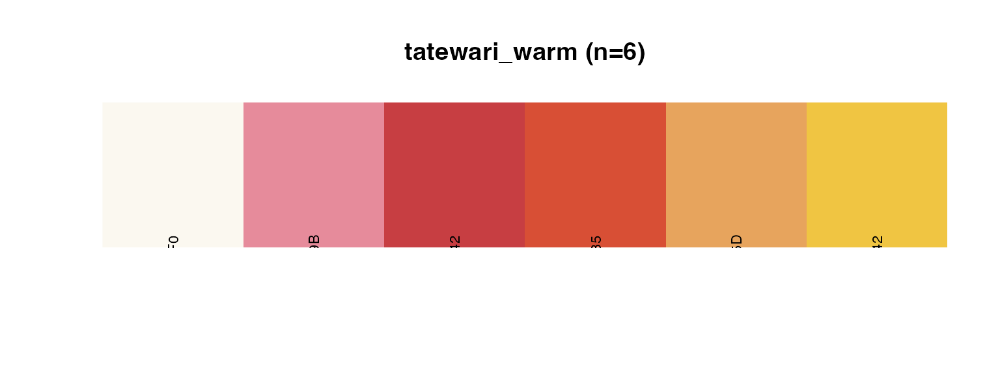
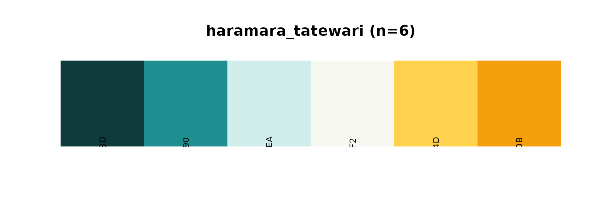
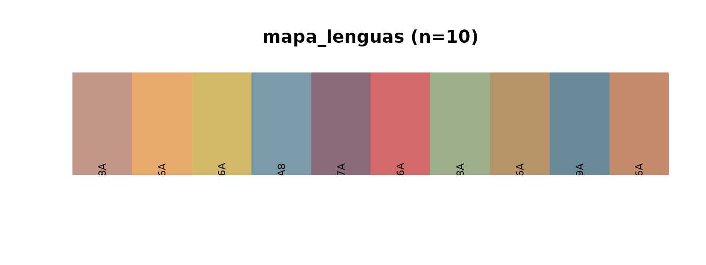

Sequential Palettes
Tatewari Warm
wixarika_show_pal("tatewari_warm")
Inspired by Grandfather Fire. Perfect for warm data progressions.
Kauyumari Forest & Sky
wixarika_show_pal("kauyumari_forestsky")
Sacred deer spirit colors, blending forest and sky.
Diverging Palettes
Haramara Tatewari
wixarika_show_pal("haramara_tatewari")
Ocean to fire - teal through cream to gold.
Qualitative Palettes
Mapa de Lenguas
wixarika_show_pal("mapa_lenguas")
Based on the historic indigenous languages map of Mexico.